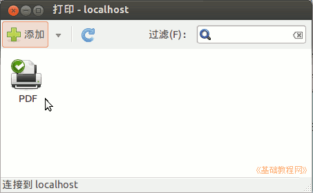
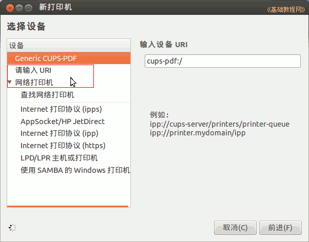
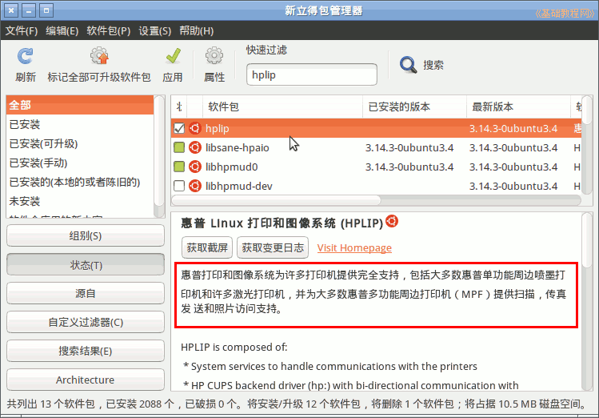
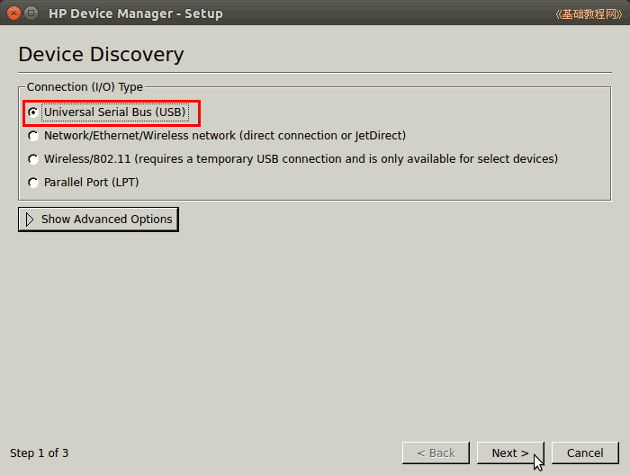
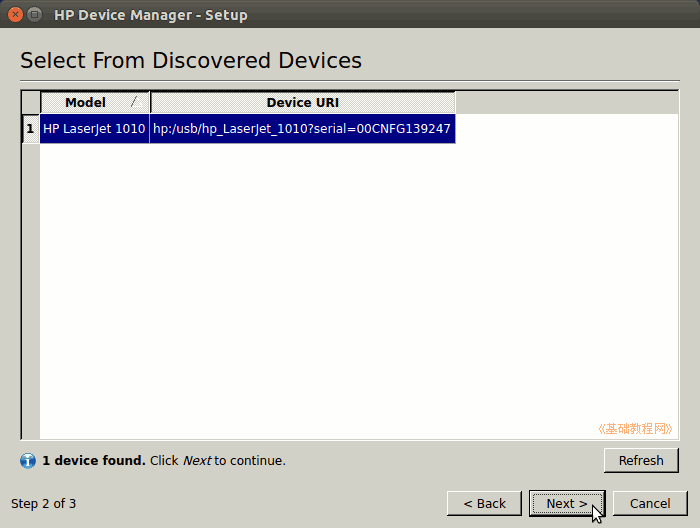
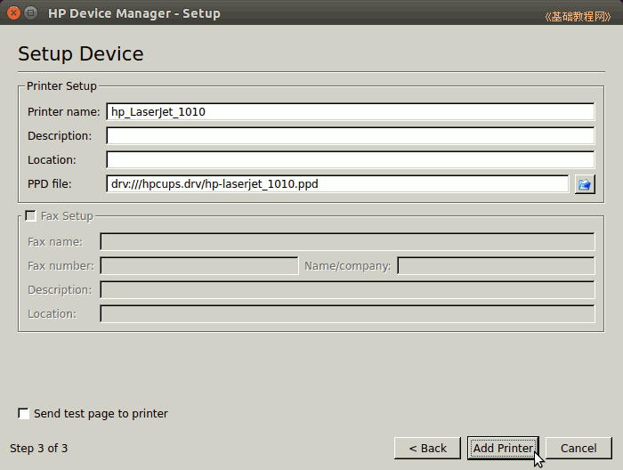
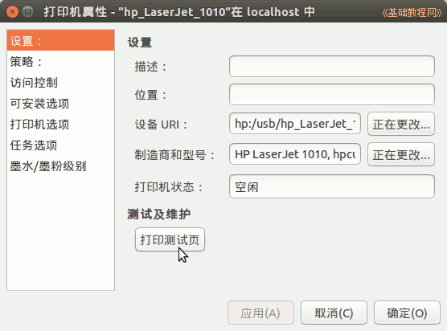

Ubuntu 入门操作指南
作者：TeliuTe 来源：基础教程网
五十六、打印机 返回目录 下一课在这里，可以添加本地和网络打印机；
1、打印机
1）使用打印机之前，需要安装驱动程序，一般系统可以自动识别，或者安装随机光盘里的程序；
安装一个虚拟的PDF打印机 cups-pdf 的命令： sudo apt-get install cups-pdf
2）点击主按钮，在搜索中输入printer ，打开程序，或者依次点“主按钮、所有程序、过滤结果、系统、打印机”；

3）点“添加”按钮，可以添加本地或者网络打印机；

4）更多可以查阅打印机手册，或者到打印机官方网站上查询；
5）打印文档，在文字程序窗口中，点菜单“文件－打印”命令即可；
6）还可以安装惠普打印机设置程序，在新立得或终端安装 hplip

7）在终端运行 sudo hp-setup 出来查找设备，一般是选第一个USB连接；

8）点Next继续，会显示找到的打印机；

9）点Next继续，显示打印机设置页面，勾选左下角的send test page to printer 可以打印测试页，点“Add Printer”，完成打印机安装；

10）也可以到“系统设置-打印机”里，查看打印机属性，打印测试页；

本节学习了打印机的基础知识，如果你成功地完成了练习，请继续学习下一课内容；
本教程由86团学校TeliuTe制作|著作权所有
基础教程网：http://teliute.org/
美丽的校园……
转载和引用本站内容，请保留作者和本站链接。